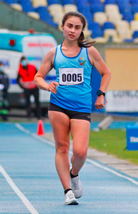

Es uno de los deportes más antiguos, su origen viene desde la época de la Antigua Grecia cuando los mensajes eran entregados por hombres caminando grandes distancias en poco tiempo, sin embargo, es de los menos conocidos. La marcha atlética es de aquellos deportes que pasan desapercibidos, pero al contrario de lo que se cree, no es solo caminar.
Historia
Desde la antigua Roma y Grecia el hombre caminaba largas distancias, posteriormente en los siglos XVIII y XIX se practicaba como carreras de apuestas, ya en el siglo XX es parte de todos los JJOO, deja de ser una mera diversión y es visto como deporte formal. Aunque recién en el año 2000 la categoría femenina es parte de los Juegos Olímpicos de Beijing 2000.
La técnica
Primera gráfica
ARRANQUE: se levanta un pie mientras el otro permanece tocando el suelo, cumpliendo la regla principal.
Segunda gráfica
ATAQUE: el lado de la cadera del pie que se levanta, se eleva lo más que se pueda, para dar una zancada lo más amplia posible y abarcar más espacio sin flexionar la rodilla.
Tercera gráfica
RELAJACIÓN: el pie vuelve al suelo y se repite el movimiento con la otra extremidad.
Debido a las reglas de que un pie siempre debe estar tocando el suelo, y que al dar una zancada no se puede doblar la rodilla, la fuerza se concentra en la cadera y columna, mientras que los pies se mantienen ligeros para avanzar velozmente
Los detalles
La cadera constantemente se esta moviendo dependiendo del lado que se eleve. Por esto los gestos se ven exagerados, ya que se busca abarcar el mayor espacio posible con la zancada. Por ende la columna hará el mismo movimiento, creándose una constante rotación de ambas.
La rótula se encuentra en constante movimiento, ya sea en reposo o arranque. Solo en el ataque es cuando se encuentra completamente estirada, se ejerce una fuerza mayor en ella para mantenerla así al realizar el movimiento de llevar la pierna hacia adelante.
Las zapatillas para la marcha deben tener una suela lo más liviana posible, con la profesionalización del deporte y los avances tecnológicos, se han ido creando zapatillas más ligeras. Hoy en día los materiales más usados son la espuma y goma, las que por su pororsidad permiten que el aire pase.
Pista y Ruta
Si bien la ruta por Santiago no está definida, la partida y meta estarán en la explanada Campo de Marte del Parque O´Higgins. En todas las mitades de la ruta se encuentran los baños (cuadros celestes) debido a que las carreras tienen mínimo una hora de duración aprox.
Los mejores tiempos Panamericanos
Dentro de las categorías de hombres y mujeres, existen dos principales, los 20km y 35km. En los juegos panamericanos estarán los tres países con los deportistas que tienen mejores tiempos Perú, Ecuador y Brasil. Estos serán los rivales a vencer en Santiago 2023.
Deportista destacada

Anastasia Sanzana es la representante chilena en la marcha para los Juegos Panamericanos, es la campeona nacional y tiene el mejor tiempo del Campeonato nacional de atletismo.